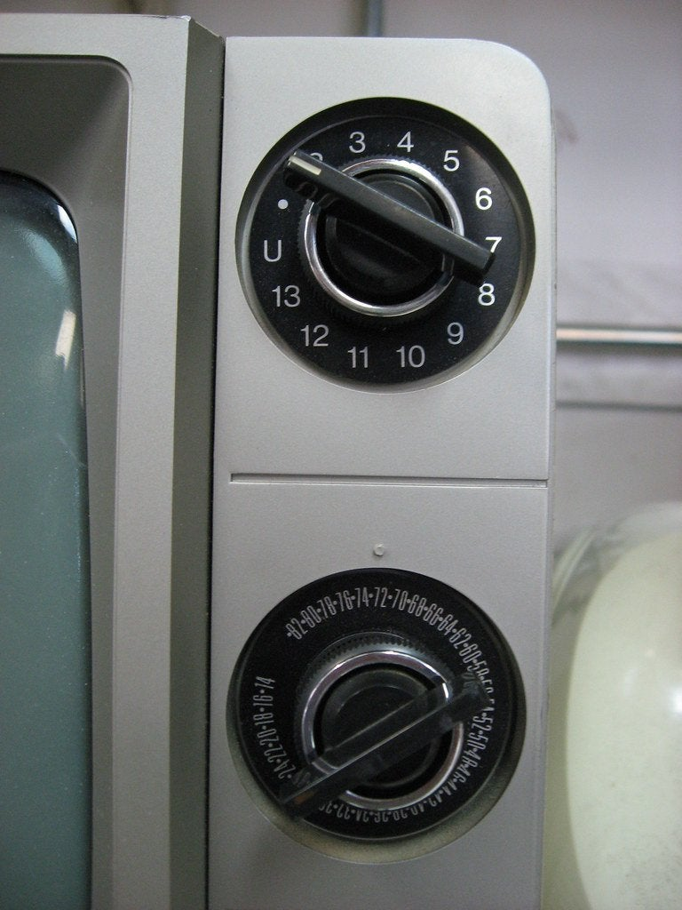
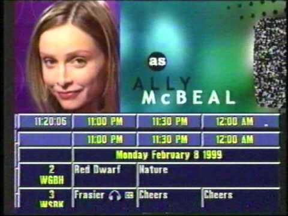

A super quick TV history overview as related to TV markets
When television first started in the late 1940’s/early 1950’s availability of a broadcast signal was limited to the geographic area in which the station broadcast their signal. If you were too far away from the station’s broadcast antenna, you did not get access to that channel. As broadcast technology evolved, broadcast signals were able to extend further into the service area. When television first started each station operated on the VHF or Very High Frequency band which comprises channels 2 through 13. These radio waves travel far but they do have their limits. As television became more accessible to the general public and more television stations signed on, the need for additional channel frequencies became necessary and thus the FCC or Federal Communications Commission approved the use of the UHF band for television broadcasts. The UHF band, Ultra High Frequency comprises channels 14 through 69 and can travel further than the VHF frequency.

As technology progressed through the 80’s and television viewing continued to increase cable systems started to develop to bring premium content to the homes of viewers who were willing to pay for additional television content. As such, cable systems were beginning to be adopted in the average American home. No longer were families relying on their television antenna for content. As a part of the “package” from the cable systems, they included feeds from the viewer’s local television channels. To protect broadcasters from the competition from the cable systems the FCC created a rule called the “must carry” rule (note 2) to require cable systems (and later satellite systems) to carry all local television stations to ease the access to these stations for the consumer. This introduced local television stations to consumers to TV stations that they may not have been able to watch before due to the geography or strength of the signal for that particular station.

How TV markets are defined
The definition of TV markets relied upon using an old technology to help form those markets. It was the source of original broadcast entertainment in America: Radio. A company that was established to collect listener data on radio broadcasts, Arbitron, established a methodology of “areas of dominant influence” (note 3) that determined lister’s preferences and stations that they frequently listened to in a given geographic area. This data was used to develop a geographic market designation for areas within the United States - effectively demarcating where one broadcast area starts and stops.
Fast forward to the cable age, these principles were adopted and applied to television broadcasters and assigned counties to a geographic television broadcast area. Aribitron, later sold to the Nielsen Corporation, continue to monitor the geographic markets and sell the data to marketing companies that assist customers with advertisement purchases. These geographic markets came to be what is known colloquially in the industry as a DMA or Designated Market Area. Television stations use these to designate their viewing area and are also used in the Marketing industry as a resource to define areas when selling advertising to a given region/area. Each DMA is ranked by the number of residents in that particular region and is ranked from largest to smallest.
As of 2020, the number 1 ranked market is New York City (no surprise!) and the smallest, ranked at number 210, is Glendive, MT market. For reference, the Boston/Manchester, NH market is ranked as the 9th largest media market in the United States surrounded by Houston (8) and Atlanta (10) (note 4).